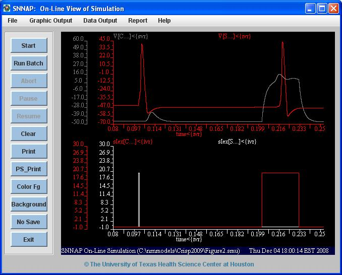

This is the model for the paper Crisp KM (2009) Multiple spike initiation zones in a neuron implicated in learning in the leech: a computational model. Invert Neurosci Usage: Make sure you have SNNAP installed and started according to the instructions at http://snnap.uth.tmc.edu/content/downloads.htm After you load the simulation and press start you should see figure 2 reproduced:  These model files were supplied by Dr Kevin Crisp.